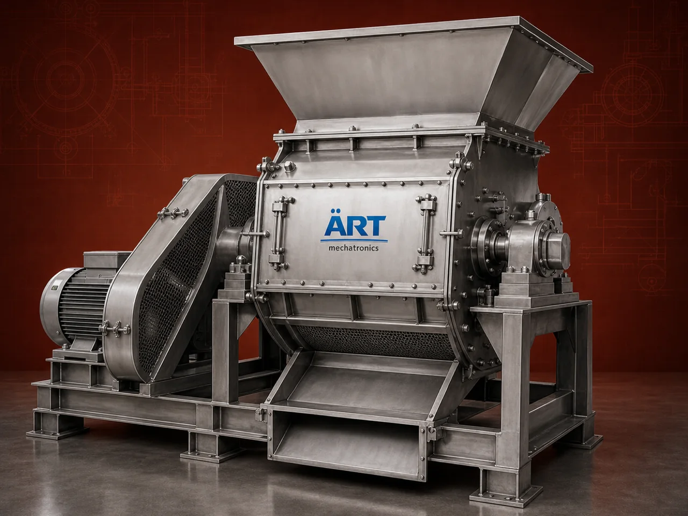

Hammer Mill Machine (Industrial Crushing & Grinding System for Coarse to Medium Pulverization)
A Hammer Mill Machine is a robust industrial grinder designed to crush, shred, and grind a wide range of materials using high-speed rotating hammers. It is widely used for coarse to medium size reduction in industries such as agro processing, animal feed, biomass, chemicals, minerals, recycling, and food processing.

About the Hammer Mill Machine
Known for its high throughput, rugged construction, and versatility, the hammer mill efficiently converts bulk materials into uniform particle sizes, making it ideal for both primary and secondary grinding applications.
ART Mechatronics offers heavy-duty hammer mills engineered for continuous operation, high capacity, and reliable performance in demanding industrial environments.
One machine, many names
Buyers search for this equipment under many terms — we manufacture all of them:
Working Principle of Hammer Mill
Raw material is fed into the grinding chamber via:
Inside the mill:
Material collides with:
Achieves size reduction through impact and shear
Finished material is discharged via:
Types of Hammer Mills
Industries Using Hammer Mill
🌾 Agro & Feed Industry
- Animal feed
- Grains, corn, maize
🌿 Biomass & Pellet Industry
- Wood chips
- Sawdust
- Agro waste
⚗️ Chemical Industry
- Chemicals
- Detergents
🏗️ Mineral Processing
- Limestone
- Coal
- Gypsum
♻️ Recycling Industry
- Plastic
- Waste materials
🍃 Food Processing
- Spices
- Pulses
Features & Advantages
- High-capacity grinding and crushing
- Suitable for wide range of materials
- Uniform particle size output
- Robust and durable construction
- Easy screen change for size control
- Low maintenance operation
- Energy-efficient performance
Technical Highlights
- Capacity: Custom (kg/hr to tons/hr)
- Grinding Type: Impact + Shear
- Rotor Speed: High RPM
- Screen Size: Adjustable
- Construction: Mild Steel / Stainless Steel
- Drive: Electric motor
- Dust Control: Cyclone / Dust Collector integration
Turnkey Hammer Mill Solutions
ART Mechatronics offers:
- Complete grinding system design
- Hammer mill supply
- Feeding & conveying integration
- Cyclone and dust collection system
- Installation & commissioning
- After-sales service & AMC
Why Choose Art Mechatronics
- Expertise in heavy-duty grinding systems
- Customized designs for various materials
- High-performance and durable machines
- Suitable for multi-industry applications
- Proven reliability in industrial environments
Applications
- Feed Manufacturing Plants
- Biomass Processing Units
- Chemical Plants
- Mineral Grinding Units
- Recycling Plants
Related Size Reduction & Grinding machines
Get pricing & specs for the Hammer Mill Machine
Share the product, target capacity, current process and plant location. These details help our engineers discuss the right machine or line configuration.
One partner, from design to start-up
ART Mechatronics designs, manufactures, installs and commissions your Hammer Mill Machine solution with regional presence in India, UAE and Thailand.